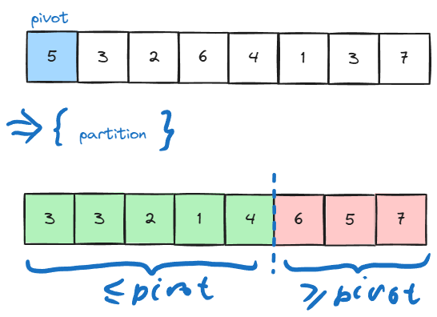
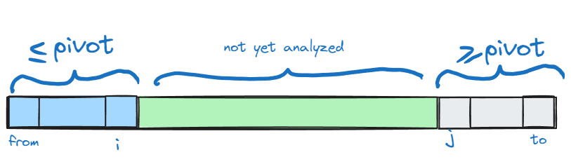
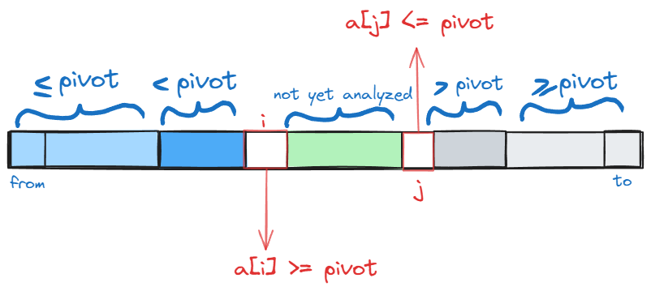

def insertion_sort(a) :
n = len(a)
# i = 1
# sorted a[0..i-1]
for i in range(1, n) :
# insert i in the right position
j = i - 1
el = a[i]
while el < a[j] and j > 0 :
a[j + 1] = a[j]
j = j - 1
# el >= a[j] or j == 0
if el < a[j] : # j == 0
a[1] = a[0]
a[0] = el
else : # el >= a[j]
a[j + 1] = el
return a4 Sorting and Priority Queues
4.1 Sorting Algorithms
Insertion Sort
testing insertion sort for some inputs:
import numpy as np
for i in range (2, 8) :
randarr = np.random.randint(1, 20, i)
print("in: ", randarr)
print("out: ", insertion_sort(randarr))in: [17 10]
out: [10 17]
in: [15 12 6]
out: [ 6 12 15]
in: [ 2 10 18 17]
out: [ 2 10 17 18]
in: [15 18 9 2 17]
out: [ 2 9 15 17 18]
in: [3 9 8 3 9 4]
out: [3 3 4 8 9 9]
in: [ 4 6 1 14 12 8 1]
out: [ 1 1 4 6 8 12 14]Following illustrates the state after each insertion (ith iteration):
def insertion_sort_print(a) :
n = len(a)
# i = 1
# sorted a[0..i-1]
for i in range(1, n) :
# insert i in the right position
j = i - 1
el = a[i]
while el < a[j] and j > 0 :
a[j + 1] = a[j]
j = j - 1
# el >= a[j] or j == 0
if el < a[j] : # j == 0
a[1] = a[0]
a[0] = el
else : # el >= a[j]
a[j + 1] = el
print("after insertion ", i, ": ", a)
# return aa = np.random.randint(-20, 20, 8)
print("input: ", a)
insertion_sort_print(a)input: [-16 -19 18 17 18 -17 -17 -18]
after insertion 1 : [-19 -16 18 17 18 -17 -17 -18]
after insertion 2 : [-19 -16 18 17 18 -17 -17 -18]
after insertion 3 : [-19 -16 17 18 18 -17 -17 -18]
after insertion 4 : [-19 -16 17 18 18 -17 -17 -18]
after insertion 5 : [-19 -17 -16 17 18 18 -17 -18]
after insertion 6 : [-19 -17 -17 -16 17 18 18 -18]
after insertion 7 : [-19 -18 -17 -17 -16 17 18 18]Selection Sort
basic idea: repeatedly find the smallest element in the unsorted tail region and move it to the front (via swapping).
explanation:
python implementation:
def selection_sort(a) :
N = len(a)
j = 0
# sorted a[0..j-1] && a[0..j-1] <= a[j..N-1]
while (j < N) :
# find min a[j..N-1]
k = j
min = a[k]
i = j + 1
#a[k] == min == min(a[j .. i - 1])
while (i < N) :
if a[i] < min :
min = a[i]
k = i
i = i + 1
# k = j + find_min(a[j :])
a[j], a[k] = a[k], a[j]
j = j + 1
return awe test this on some random arrays:
for i in range (2, 8) :
randarr = np.random.randint(-50, 50, i)
print("in: ", randarr)
print("out: ", selection_sort(randarr))in: [22 23]
out: [22 23]
in: [ 0 -46 47]
out: [-46 0 47]
in: [-47 45 -39 17]
out: [-47 -39 17 45]
in: [ 4 -47 -37 -16 39]
out: [-47 -37 -16 4 39]
in: [ 19 35 -11 4 49 -35]
out: [-35 -11 4 19 35 49]
in: [ -1 33 -28 -45 -30 -48 19]
out: [-48 -45 -30 -28 -1 19 33]Bubble Sort
Let a : Array[0..N-1]<Nat>. The bubble operation pushes the largest element to the end of the array:
def bubble(a) :
N = len(a)
i = 0
# a[i] == max(a[0..i])
while i < N - 1:
if a[i] > a[i + 1] :
a[i], a[i+1] = a[i+1], a[i]
i = i + 1
# post-loop: i == N - 1
return a
bubble([-5, 10, 1, 3, 7, -2])[-5, 1, 3, 7, -2, 10]The code of this function is used inside bubble_sort():
def bubble_sort(a) :
N = len(a)
j = N
swapped = False
while True : # emulate do while loop
# sorted a[j .. N - 1] and a[0..j-1] <= a[j .. N - 1]
while j > 0 :
i = 0
while i < j - 1 :
if a[i] > a[i + 1] :
a[i], a[i + 1] = a[i + 1], a[i]
i = i + 1
j = j - 1
if not swapped : break # if no swaps performed at all, array already
# sorted
return aWe test on some arrays:
for i in range (2, 8) :
randarr = np.random.randint(-50, 50, i)
print("in: ", randarr)
print("out: ", bubble_sort(randarr))in: [-26 -6]
out: [-26 -6]
in: [-46 24 -17]
out: [-46 -17 24]
in: [ -9 -37 8 -20]
out: [-37 -20 -9 8]
in: [24 3 38 41 -1]
out: [-1 3 24 38 41]
in: [ 11 23 41 -13 39 1]
out: [-13 1 11 23 39 41]
in: [-20 13 -12 -5 -22 -33 -26]
out: [-33 -26 -22 -20 -12 -5 13]Visual expalantion:
Merge Sort
The input sequence is recursively divided into two sequnces of equal size. It is a straightforward application of the divide-and-conquer principle (recursion).
A helper function for merging two sorted sequences into one single sorted sequence is necessary.
Pseudocode:
Function merge<T>(a, b : Sequence of T) := (
c := <>
// invariant: sorted(a) &&
// sorted(b) &&
// sorted(c) &&
// c <= a && c <= b
while true :
if empty(a) : concat(c, b); return c;
if empty(b) : concat(c, a); return c;
if a.first() <= b.first() : c.moveBack(a.first());
else c.moveBack(b.first())
)Given by the following python implementation:
def merge(a, b) :
# assert: a and b are sorted
c = []
n1 = len(a)
n2 = len(b)
k1 = 0
k2 = 0
i = 0
# invariant: merged a[0..k1 - 1] with b[0..k2 - 2]
while k1 < n1 and k2 < n2 :
if a[k1] <= b[k2] :
c.append(a[k1])
k1 = k1 + 1
else :
c.append(b[k2])
k2 = k2 + 1
# k1 >= n1 or k2 >= n2
if k1 == n1 :
while k2 < n2 :
c.append(b[k2])
k2 = k2 + 1
if k2 == n2 :
while k1 < n1 :
c.append(a[k1])
k1 = k1 + 1
return c
def merge_sort(a) :
if len(a) == 1 : return a[0:1]
n = len(a)
a1 = a[0 : n // 2]
a2 = a[n // 2 : ]
return merge(merge_sort(a1), merge_sort(a2))We test on some arrays:
for i in range (2, 8) :
randarr = np.random.randint(-20, 20, i)
print("in: ", randarr)
print("out: ", merge_sort(randarr))in: [13 0]
out: [0, 13]
in: [ 11 -9 -16]
out: [-16, -9, 11]
in: [ 2 -17 4 -16]
out: [-17, -16, 2, 4]
in: [ 4 18 5 -4 7]
out: [-4, 4, 5, 7, 18]
in: [-13 -3 16 17 -15 12]
out: [-15, -13, -3, 12, 16, 17]
in: [ 18 -19 1 -16 -19 19 1]
out: [-19, -19, -16, 1, 1, 18, 19]Quick Sort
- similar to merge sort in that it is also a recursive divide and conquer algorithm
- advantage over mergesort: no temporary arrays to hold partial results.
- a pivot element is selected and the array is repetitively partitioned into regions so that all elements in the left region is are no larger than the pivot, and all elements in the right region are no less than the pivot:

- assuming that we have the partitioning function, quicksort then can be simply written as:
void quicksort(int* a, int, from, int to)
{
if (from >= to) return; // recursion base
int p = partition (a, from, to);
quicksort(a, from, p); // recursive call on the left partition
quicksort(a, p + 1, to) // recursive call on the right partition
}Quicksort Partition
- First pick an element from the range. This element is called the pivot. In the simplest version of quicksort the pivot is simply always chosen as the first element of the range. (This will lead to bad perfermance for sorted and almost sorted arrays)
- Assume that at some point of the execution we have the following state (this is the invariant of the partitioning algorithm) :

executing following actions while
i < jwill preserve the invarianti++; while (a[i] < pivot) i++; j--; while (a[j] > pivot) j++; if (i < j) {swap(a[i], a[j]);}to understand why consider the first two lines. After executing them following state holds:

quicksort parition post-condition final line swaps
a[i]anda[j], reastablishing the invariant.full partitioning function is given as:
int parition(int* a, int from, int to) { int pivot = a[from]; // pivot is simply the first element int i = from - 1; int j = to + 1; while (i < j) { i++; while (a[i] < pivot) i++; j--; while (a[j] > pivot) j++; if (i < j) swap(a[i], a[j]); } return j; }
Quicksort Naively
def quicksort(s) :
if len(s) <= 1 : return s
p = s[len(s) // 2]
a = []
b = []
c = []
for i in range(0, len(s)) :
if s[i] < p : a.append(s[i])
for i in range(0, len(s)) :
if s[i] == p : b.append(s[i])
for i in range(0, len(s)) :
if s[i] > p : c.append(s[i])
return quicksort(a) + b + quicksort(c)testing this naive implementation for some arrays:
for i in range (2, 8) :
randarr = np.random.randint(-10, 20, i)
print("in: ", randarr)
print("out: ", quicksort(randarr))in: [11 5]
out: [5, 11]
in: [ 7 4 19]
out: [4, 7, 19]
in: [18 10 5 14]
out: [5, 10, 14, 18]
in: [-1 0 19 -9 -1]
out: [-9, -1, -1, 0, 19]
in: [-5 -6 8 18 15 15]
out: [-6, -5, 8, 15, 15, 18]
in: [ 0 16 7 13 -7 -2 -4]
out: [-7, -4, -2, 0, 7, 13, 16]Quicksort Refinements
pseudocode:
Procedure qSort(a : Array<T>; l, r : Nat) :=
while r - l + 1 > n0 :
j := pick_pivot_pos(a, l, r)
swap(a[l], a[j]) // pivot is at the first position
p := a[l] // p is the value of the pivot
i := l; j := r
do
while a[i] < p : i++; //skip over the elements
while a[j] > p : j--; // already in the correct subarray
if i <= j :
swap(a[i], a[j])
i++
j--
while i <= j
qSort(a, l, j)
qSort(a, i, r)cpp implementation including testing for {3, 6, 8, 1, 0, 7, 2, 4, 5, 9}
#include <iostream>
// procedre for swapping integers
void swap(int& x, int& y)
{
int temp = x;
x = y;
y = temp;
}
// the partitioning function
// simple version for pivot: always first element is chosen
int partition(int* a, int from, int to)
{
int pivot = a[from];
int i = from - 1;
int j = to + 1;
// invariant: a[f .. i] <= pivot && a[j .. t] >= pivot
while (i < j) {
i++; while (a[i] < pivot) i++;
j--; while (a[j] > pivot) j--;
if (i < j) swap(a[i], a[j]);
}
return j;
}
// quicksort itself
void quicksort(int* a, int from, int to)
{
if (from >= to) return;
int p = partition(a, from, to);
quicksort(a, from, p);
quicksort(a, p + 1, to);
}
// testing quicksort:
int main(int argc, const char** argv) {
int a[] = {3, 6, 8, 1, 0, 7, 2, 4, 5, 9};
quicksort(a, 0, 9);
for (int i = 0; i < 10; i++)
std::cout << a[i] << ", ";
std::cout << a[9] << std::endl;
return 0;
}Quicksort Analysis
Average: \(\mathcal{O}(n\log(n))\)
Worst-case: \(\mathcal{O}(n^2)\). In the simplest case where the pivot is always chosen as the first element worst case unfortunately occurs whenever the input sorted or almost sorted. Since almost sorted inputs are quite common in practice other strategies for chosing the pivot are preffered.
Nevertheless by employing clever methods for chosing the pivot element we can almost always guarantee that quicksort runs in \(\mathcal{O}(n\log(n))\).
Therefore in practice quicksort is preffered over mergesort.
Bucket Sort
So far in our model we assumed no information on keys; we didnt know whether they are numbers, strings or any other data type. The only requirement was that any two keys where comparable. Our comparison based sorting algorithms relied solely on comparing any two keys. Theoretically it can be shown that the lower bound for such algorithms is \(\Omega{n\log n}\).
Now if we extend our model
# sorts keys in range [0, 100)
def KSort(s) :
# initialize orray of length 100 with empty buckets
b = []
for i in range(100) : b.append([])
# place elements in buckets
for el in s : b[el].append(el)
# array holding results
res = []
# append elements in buckets to res
for i in range(100) :
for el in b[i] : res.append(el)
return res
# testing:
for i in range (2, 8) :
randarr = np.random.randint(0, 100, i)
print("in: ", randarr)
print("out: ", KSort(randarr))in: [72 78]
out: [72, 78]
in: [ 3 80 73]
out: [3, 73, 80]
in: [87 68 91 17]
out: [17, 68, 87, 91]
in: [90 66 80 25 77]
out: [25, 66, 77, 80, 90]
in: [66 2 45 86 40 26]
out: [2, 26, 40, 45, 66, 86]
in: [37 99 96 15 2 58 15]
out: [2, 15, 15, 37, 58, 96, 99]Radix Sort
Employing a clever trick we can significantly increase the range of keys. In bucket sort we perform the sorting on the key itself. In radix sort we iteratively perform bucket sort on the digits of the keys, starting from the least significant digit. This works especially because bucket sort is a stable sorting algorithm.
This way we can sort keys in range \(10^d - 1\). We have 10 buckets. Different bases can be chosen.
We slightly modify previous bucket sort, where a key function is passed as an argument, with \(d = 5\)
# sorts keys in range [0, 10)
def KSort2(s, key) :
# initialize orray of length 100 with empty buckets
b = []
for i in range(10) : b.append([])
# place elements in buckets
for el in s : b[key(el)].append(el)
# array holding results
res = []
# append elements in buckets to res
for i in range(10) :
for el in b[i] : res.append(el)
return res
# sorts keys in range [0, 10^5)
def LSDRadixSort(a) :
for i in range(5) :
a = KSort2(a, lambda x : (x // 10**i) % 10)
return a
# testing
for i in range(5, 10) :
randarr = np.random.randint(0, 10**5, i)
print("input: ", randarr)
print("output: ", LSDRadixSort(randarr))input: [52805 76622 94183 79018 13734]
output: [13734, 52805, 76622, 79018, 94183]
input: [59667 86384 62886 20561 43297 25354]
output: [20561, 25354, 43297, 59667, 62886, 86384]
input: [46042 11610 59453 27738 95187 29479 56254]
output: [11610, 27738, 29479, 46042, 56254, 59453, 95187]
input: [92836 4667 12602 58412 27798 42578 89259 11778]
output: [4667, 11778, 12602, 27798, 42578, 58412, 89259, 92836]
input: [16937 92843 11417 6530 37633 81926 96655 76916 34755]
output: [6530, 11417, 16937, 34755, 37633, 76916, 81926, 92843, 96655]4.2 Priority Queues and Heap Data Structure
A set \(M\) of Elements \(e : T\) with Keys supporting two operations:
insert(e): Insert \(e\) into \(M\).delete_min(): remove the min element from \(M\) and return it.
Applications
- Greedy algorithms (selecting the optimal local optimal solution)
- Simulation of discrete events
- branch-and-bound search
- time forward processing.
Binary Heaps
Heap Property:
- For any leaf \(a \in M\) \(a\) is a heap.
- Let \(T_1,\, T_2\) be heaps. If \(a \leq x, \, \forall x\in T_1, T_2\), then \(T_1 \circ a \circ T_2\) is also a heap.
Complete Binary Tree:
- A complete binary tree is a binary tree in which ever lebel, except possibly the last, is completely filled, and all nodes in the last level are as far left as possible.
Heap:
- A heap is a complete binary tree that satisfies the heap property:
- A heap can be succinctly represented as an array:
- Array
h[1..n] - for any given node with the number
j:- left child:
2*j - right child
2*j + 1 - parent:
bottom(j/2)
- left child:
Pseudocode:
Class BinaryHeapPQ(capacity: Nat)<T> :=
h : Array[1..capacity]<T>
size := 0 : Nat // current amount of elements
// Heap-property
// invariant: h[bottom(j/2) <= h(j)], for all j == 2..n
Function min() :=
assert size > 0 // heap non-emtpy
return h[1]
Procedure insert(e : T) :=
assert size < capacity
size++
h[size] := e
siftUp(size)
Procedure siftUp(i : Nat) :=
// assert Heap-property violated at most at position i
if i == 1 or h[bottom(i / 2)] <= h[i] then return
swap(h[i], h[bottom(i/2)])
siftUp(bottom(i/2))
Procedure popMin : T :=
result = h[1] : T
h[1] := h[size]
size--
siftDown(1)
return result
Procedure siftDown (i : Nat) :=
// assert: Heap property is at most at position 2*i or 2*i + 1 violated
if 2i > n then return // i is a leaf
// select the appropriate child
if 2*i + 1 > n or h[2*i] <= h[2*i + 1] :
//no right child exists or left child is smaller than right
m := 2*i
else : m := 2*i + 1
if h[i] > h[m] :
swap(h[i], h[m])
siftDown(m)
Procedure buildHeap(a[1..n]<T>) :=
h := a
buildRecursive(1)
Procedure buildHeapRecursive(i : Nat) :=
if 4*i <= size : // children are not leaves
buildHeapRecursive(2*i) // assert: heap property holds for left subtree
buildHeaprecursive(2*i + 1) // assert: heap property holds for right subtree
siftDown(i) //assert Heap property holds for subtree starting at i
//alternatively
Procudure buildHeapBackwards :=
for i := n/2 downto 1 :
siftDown(i)
Procedure heapSort(a[1..n]<T>) :=
buildHeap(a) // O(n)
for i := n downto 2 do :
h[i] := deleteMin(); // O(log(n))Heap Insert
Procedure insert(e : T) :=
assert size < capacity
size++
h[n] := e
siftUp(n)
Procedure siftUp(i : Nat) :=
// assert Heap-property violated at most at position i
if i == 1 or h[bottom(i / 2)] <= h[i] then return
swap(h[i], h[bottom(i/2)])
siftUp(bottom(i/2))Illustration of heap insert:
Heap Pop Min (or Delete Min)
Procedure popMin : T :=
result = h[1] : T
h[1] := h[n]
n--
siftDown(1)
return result
Procedure siftDown (i : Nat)
// assert: Heap property is at most at position 2*i or 2*i + 1 violated
if 2i > n then return // i is a leaf
// select the appropriate child
if 2*i + 1 > n or h[2*i] <= h[2*i + 1] :
//no right child exists or left child is smaller than right
m := 2*i
if h[i] > h[m] :
swap(h[i], h[m])
siftDown(m) else : m := 2*i + 1Illustration of pop min:
Construction of a Binary Heap
- Given are \(n\) numbers. Construct a heap from these numbers
- Naive Solution: \(n\) calls to
insert()\(\Rightarrow\) \(\mathcal{O}(n\log(n))\)- Problem: If numbers are given in an array, we cant perform the construction in place.
- It is slow
- we can do faster and in place in \(\mathcal{O}(n)\) time.
Pseudocode for recursive implementation:
Procedure buildHeap(a[1..n] : T) :=
h := a
buildRecursive(1)
Procedure buildHeapRecursive(i : Nat) :=
if 4*i <= n : // children are not leaves
buildHeapRecursive(2*i) // assert: heap property holds for left subtree
buildHeaprecursive(2*i + 1) // assert: heap property holds for right subtree
siftDown(i) //assert Heap property holds for subtree starting at i A simpler iterative one-liner:
Procudure buildHeapBackwards :=
for i := n/2 downto 1 :
siftDown(i)\(\lfloor i/2 \rfloor\) is the last non-leaf node.
Time complexity of these binary heap construction algorithms is \(\mathbfcal{O}(n)\).
Heapsort
Procedure heapSort(a[1..n]<T>) :=
buildHeap(a) // O(n)
for i := n downto 2 do :
h[i] := deleteMin(); // O(log(n))Sorts in decreasing order in \(\mathcal{O}(n\log(n))\), by removing the minimal element and writing the return value to the end of the array in place.